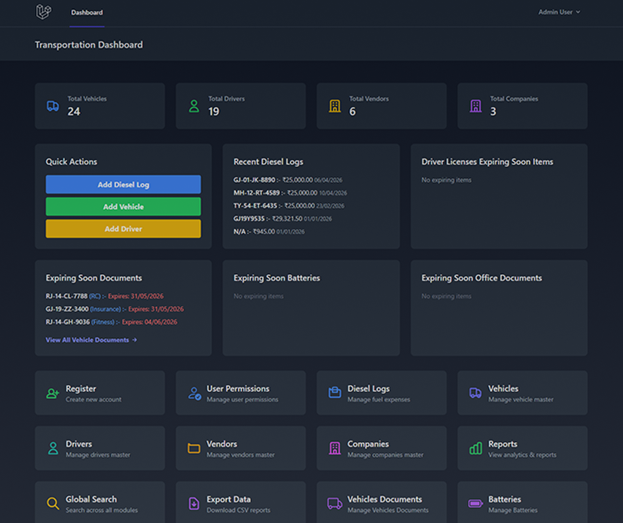
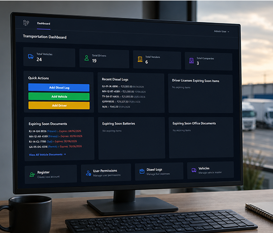

Automatic LR Number Generation
Each LR receives a unique number based on company numbering settings, helping avoid duplicate references.
Create, manage and download transport Lorry Receipts in one convenient system. Keep shipment, party, vehicle, goods and freight charge details together for easy access.
Watch a short demonstration showing how to create an LR, select parties and a vehicle, add goods and charges, save the receipt and download a PDF copy.

| Field | Example |
|---|---|
| LR Number | Auto-generated on save (e.g., LR/2026-27/0004) |
| Firm (Own Entity) | H AND H LOGISTICS |
| LR Date | 20-10-2026 |
| Status | Issued |
| Service Tax Payable By | Consignor (example selection) |
| Consignor | ABC Textiles |
| Consignee | XYZ Traders |
| Vehicle | GJ 05 AB 1234 |
| Driver | Ramesh Patel (example) |
| Vendor Code | VEN-001 (if applicable) |
| From | Surat |
| To | Ahmedabad |
| Goods / Particulars | Fabric rolls |
| Quantity | 100 packages |
| Weight | 2,500 kg |
| Remarks | Deliver packages carefully; verify quantity on receipt. |
| Sample Freight Charges | ₹12,000 (if configured / applicable) |
Everything you need to create, manage, find and download Lorry Receipts.
Each LR receives a unique number based on company numbering settings, helping avoid duplicate references.
Select the company issuing the LR. The PDF uses configured company letterhead information.
Keep sender and receiver information attached to each shipment, with an option to quickly add a new party.
Link available vehicle and driver records to the transport receipt.
Record where the goods are collected and their intended destination.
Include several goods lines on one LR with descriptions, quantities and weights.
Manage charge types and amounts, including configured contract charges, adjustments and deductions.
Manage receipts with Draft, Issued and Cancelled statuses.
Open and update saved LRs when changes are needed, subject to user permissions.
Search by LR number, filter by status or LR date range, and sort the listing to find records faster.
Download Consignee Copy, Consignor Copy, Gate Copy and Transporter Copy versions of the LR.
Authorized users can access deleted receipts and restore them when needed.
View, create, edit, delete and PDF access are checked against the application’s permissions.
LR document presentation follows company-configured branding, letterhead and numbering information.
The LR process is designed to be straightforward, even for team members who are new to transport software.
Open the Lorry Receipt section and choose to create a new LR. Select the company, enter the LR date and choose the status (Draft, Issued or Cancelled). The system generates the LR number using the company’s configured numbering format.
Choose the Consignor (the person or business sending the goods) and the Consignee (the person or business receiving them). If a party does not already exist, use the option to add a new consignor or consignee from the form.
Select the vehicle and driver where applicable. Enter the origin and destination, plus optional reference details such as vendor code. This connects the shipment with its transport information.
Add one or more goods rows. For each row, enter the item description (particulars), quantity and weight. Use Add Item to include more goods under the same receipt.
Review the applicable charge rows. Where consignor contract charges are configured, the form can load them automatically. Amounts can be adjusted for special cases, and deductions can be included where relevant. Check the calculated charge total.
Add remarks if needed and save the LR. Open the saved record to review it or download an A4 PDF copy for the consignee, consignor, gate or transporter.
Digital LRs keep your shipment paperwork organized, searchable and easy to share.
Prepare transport receipts digitally instead of repeatedly writing the same information by hand.
Keep sender, receiver, goods, vehicle and route details together.
Review configured charges and make permitted adjustments when required.
Find past LRs using number, status and date filters.
Download formatted LR copies for different transport purposes.
Allow only authorized users to create, edit or delete LRs.
A Lorry Receipt (LR) is an important transport document that records goods being transported, who sends them, who receives them and which vehicle is used. Managing LRs manually can lead to missing details, repeated paperwork and difficulty finding older receipts. The Lorry Receipt Management Module lets transport teams prepare LRs digitally, organize shipment information, manage freight charges and download formatted PDF copies.

Common questions about creating, finding and downloading Lorry Receipts.
Yes. Use Add Item to record multiple goods lines, each with its own quantity and weight.
Yes. The next available number follows the selected company’s LR numbering configuration.
Yes. The LR form includes a quick-add option for parties.
Yes, if your account has edit permission.
Yes. The PDF options include consignee, consignor, gate and transporter copies.
Yes. Search by LR number, status or date range.
Yes. Authorized users can restore soft-deleted LRs.
The Lorry Receipt Management Module brings shipment information, freight charges, company details and downloadable receipts into one workflow. Create clear LR records, find previous documents easily and keep your transport paperwork organized.